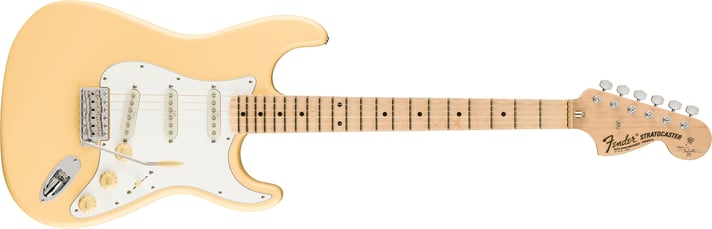

O que é o GuitarHub?
O GuitarHub é uma webpage que funciona como um display de guitarras do interesse do usuário, para informar sobre suas características, assim, norteando o usuário em suas compras futuras.
Veja maisDisplay
Yngwie J Malmsteen Stratocaster®
$2,349.99
ESTILO FORMIDÁVEL DE SHRED
Ainda o principal e mais formidável praticante do gênero, Yngwie Malmsteem praticamente inventou o fragmento neoclássico sozinho. A guitarra com a qual ele sempre fez isso é uma Stratocaster, e para aqueles que aspiram ao estilo extravagantemente rápido de Malmsteen, a Yngwie Malmsteen Stratocaster é modelada a partir da Strat® favorita do virtuoso metal sueco, até seus captadores especiais e escala recortada. Um modelo com design distinto para um dos mestres Strat mais distintos do mundo.
www.fender.com• Braço de bordo de montagem por parafuso de máquina com perfil "C" moderno e tensor "bala"
• Escala de bordo recortado ou jacarandá com raio de 9,5" com porca de latão e 21 trastes "super jumbo"
• Três captadores Seymour Duncan® YJM Fury™ com comutação de três vias
• Controle de tom "sem carga" para captadores de ponte e intermediários
• Botões de controle de plástico envelhecido, ponta de interruptor e tampas de captação
• Ponte tremolo sincronizada estilo vintage